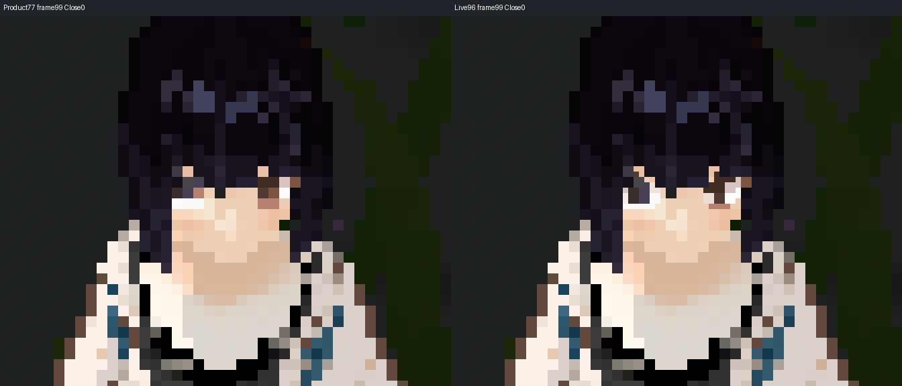
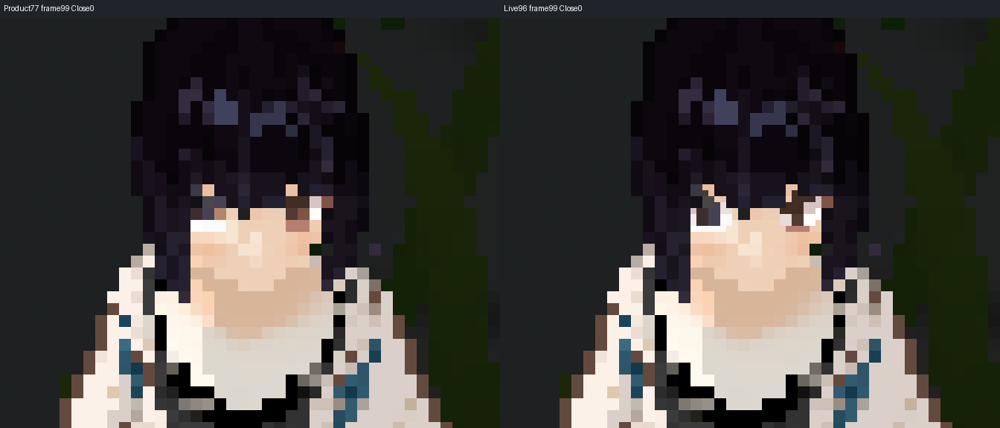
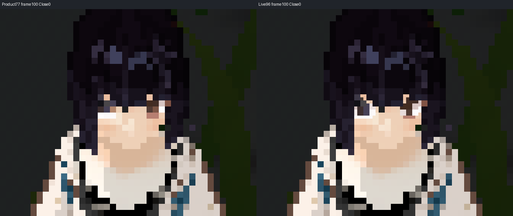
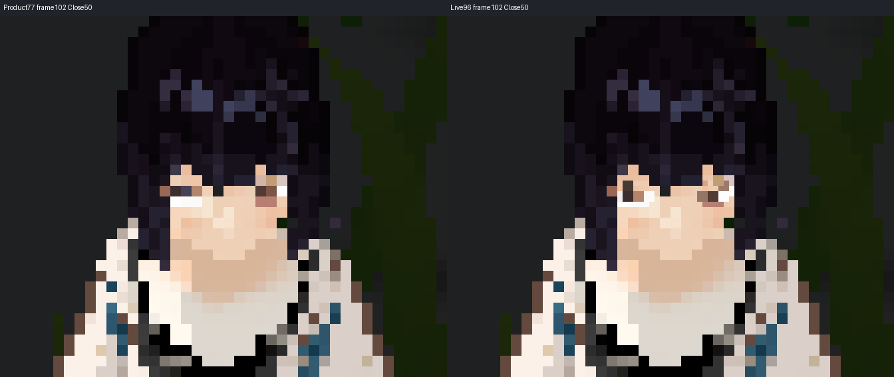
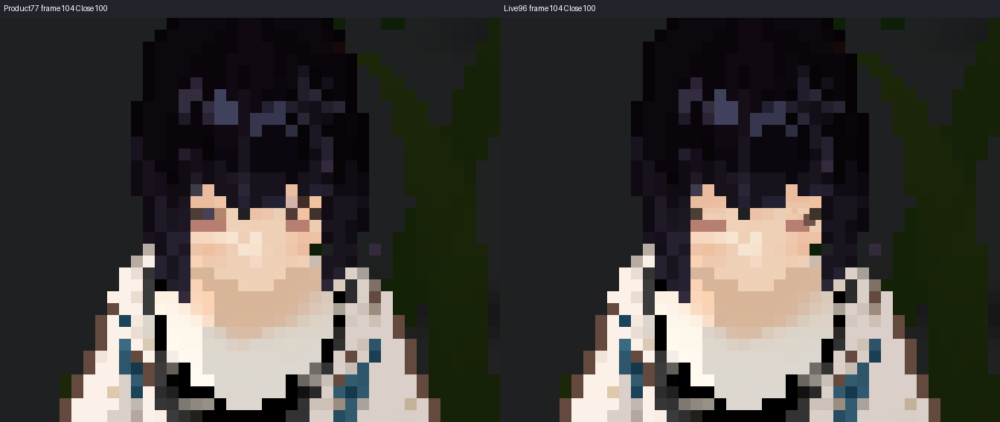
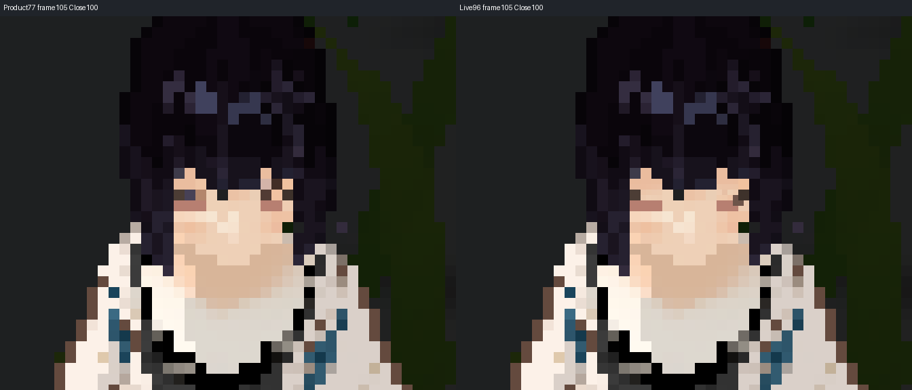
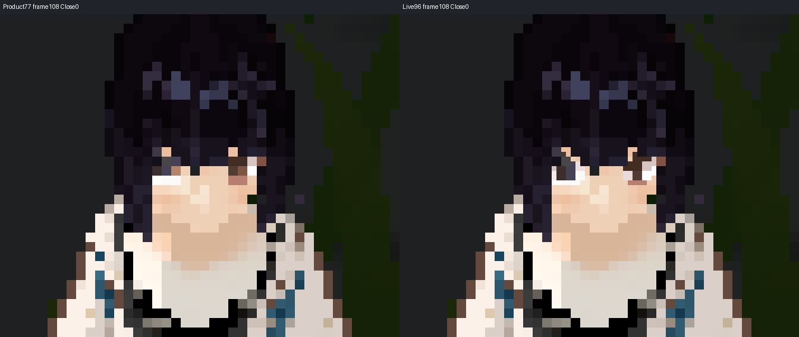

중간 보존점 · 제품77 유지 · 회전/보행/최초동률 판단은 미완
현재 평가 메쉬/원본 UV·재질/현재 source RT에서 GPU가 좌표 복원→BVH 가림→공동 선택→현재 바탕→native 합성을 직접 계산했습니다. 오프라인 선택을 재생하지 않았습니다. 새 실제7상태에서도 독립 CPU 계산과 최종 colour/owner/depth가 모두 정확히 같습니다.
기본 알고리즘 클래스는 GPU→CPU 읽기를 하지 않습니다. 표에 필요한 읽기는 관찰기에서만 수행했습니다. source shader 비교용 추가 렌더/동기 진단 비용 때문에 이번 속도를 제품 FPS로 해석하면 안 됩니다. 알고리즘 소유 버퍼 약6.4MB, 2486~2682쿼리당 삼각형9540~10586회. GPU 시간은 아직 미측정입니다.
단일 importer가 Resources 스캔에 일시적으로 없었으나 공개 getter에서 같은ID·빈145바이트 내용이 확인됐습니다. 실제 PlayerSettings/입력/옵션·씬·dirty31은 같습니다. 종료 직후 스캔은46개였고, 분리 검증에서는47개 모두 직접 동일합니다.
결과·복원·실패 한계 · 실제 CPU/GPU 비교 · Query/Select/Compose · 버퍼 소유/실행 · 원본 공급 · Graph 연결 · 격리 native 합성
| frame | evaluated Close | colour max | owner max | depth max | 미확정 |
|---|---|---|---|---|---|
| 99 | 0 | 0.0 | 0.0 | 0.0 | 0 |
| 100 | 0 | 0.0 | 0.0 | 0.0 | 0 |
| 102 | 50 | 0.0 | 0.0 | 0.0 | 0 |
| 104 | 100 | 0.0 | 0.0 | 0.0 | 0 |
| 105 | 100 | 0.0 | 0.0 | 0.0 | 0 |
| 107 | 0 | 0.0 | 0.0 | 0.0 | 0 |
| 108 | 0 | 0.0 | 0.0 | 0.0 | 0 |
아래는 조건 충족 상태들을 느리게 재생한 비교이며 연속 동작의 증거가 아닙니다.

원래 크기: 제품77 / 실제 GPU 격리96

원래 크기: 제품77 / 실제 GPU 격리96

원래 크기: 제품77 / 실제 GPU 격리96

원래 크기: 제품77 / 실제 GPU 격리96

원래 크기: 제품77 / 실제 GPU 격리96

원래 크기: 제품77 / 실제 GPU 격리96
원래 크기: 제품77 / 실제 GPU 격리96
